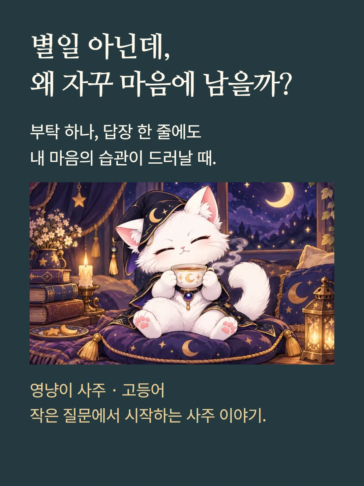
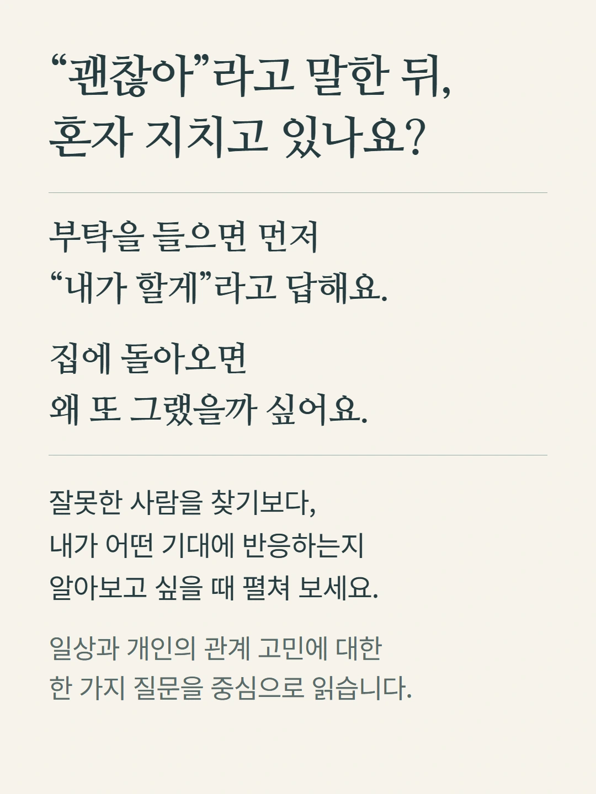
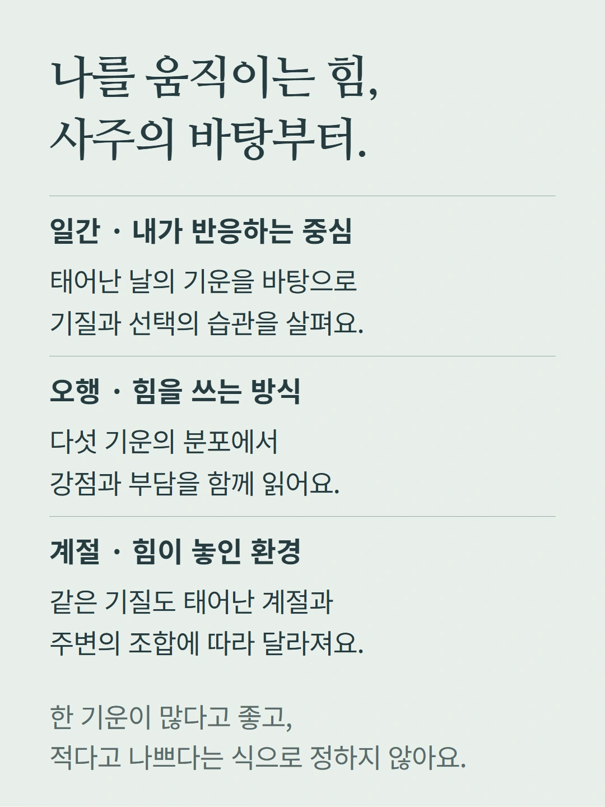
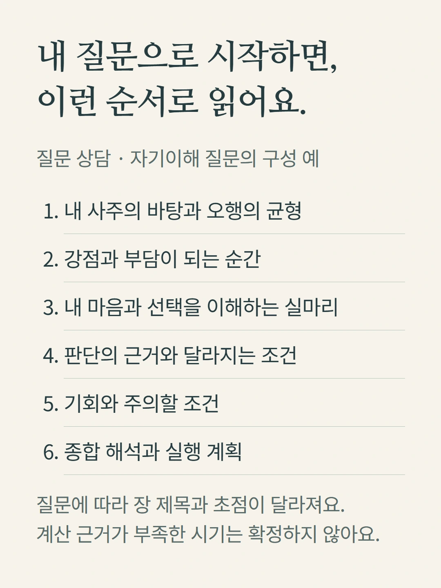
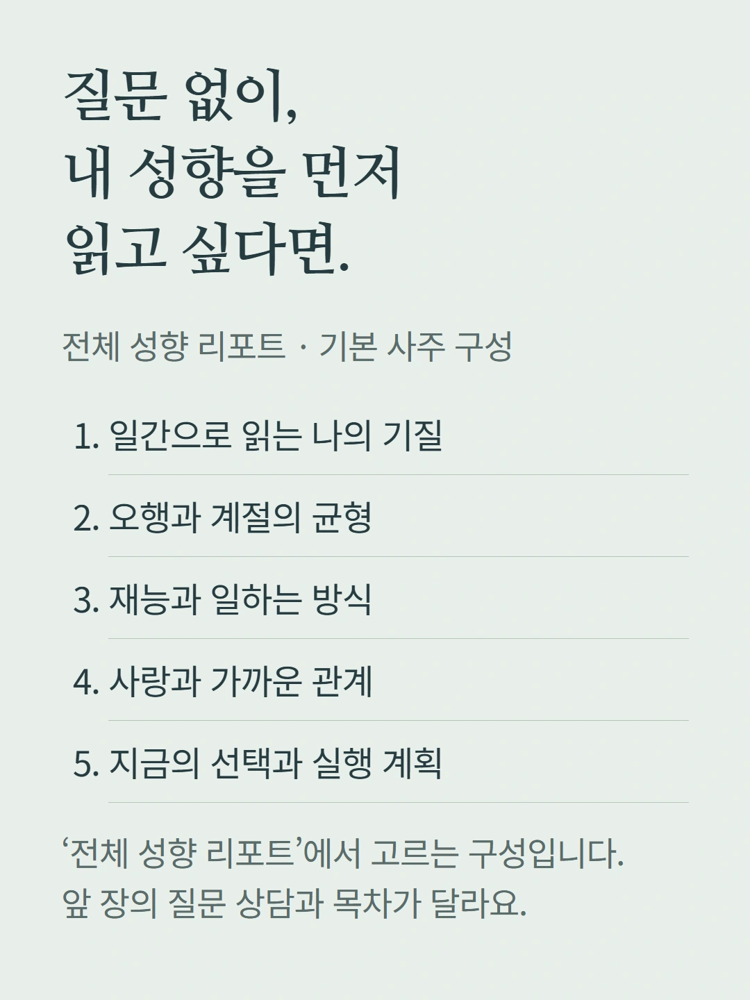
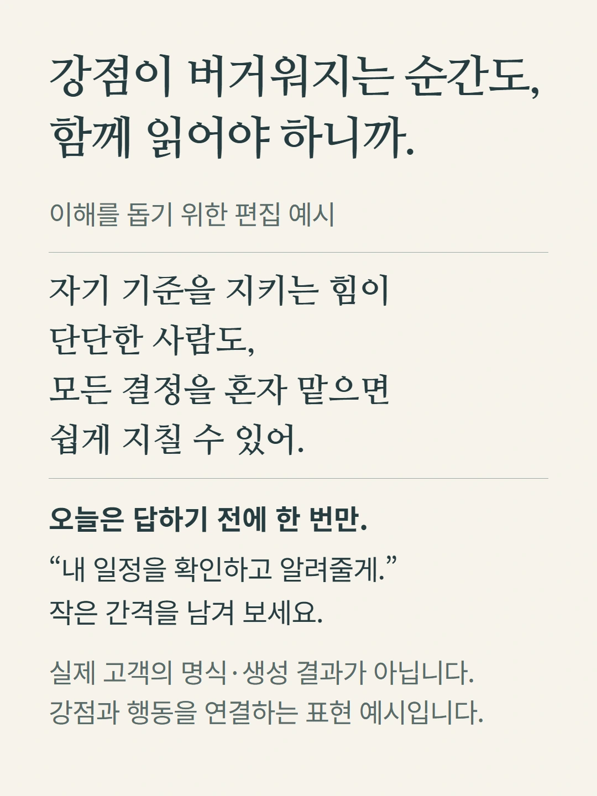
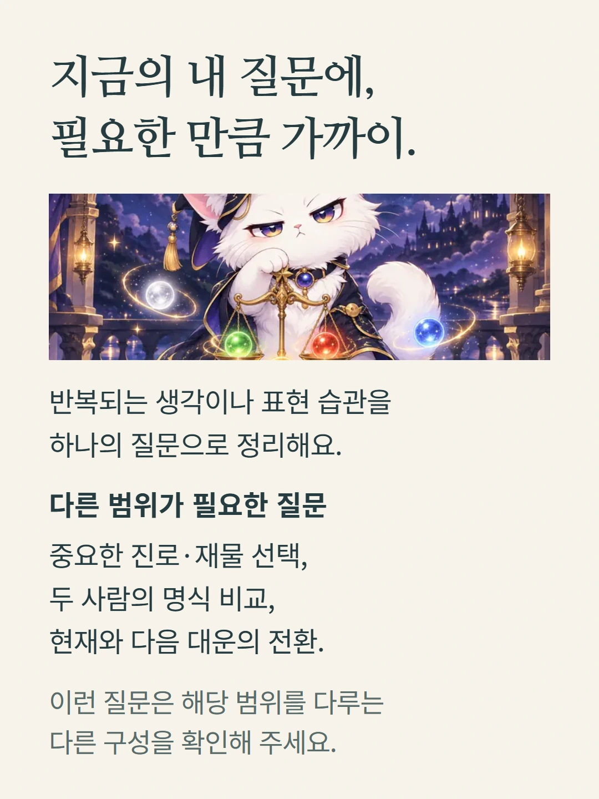
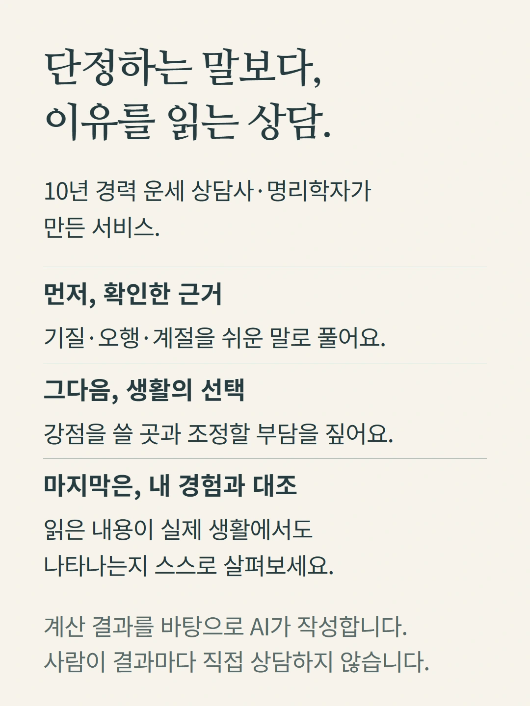
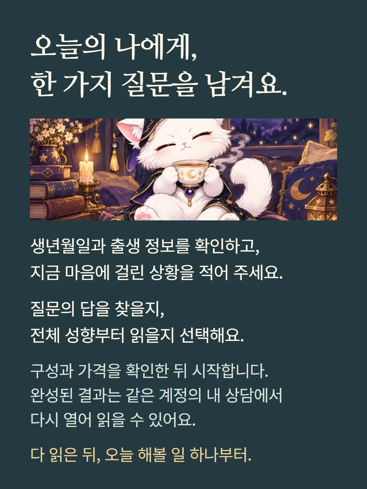

로컬 편집 미리보기. 실제 화면은 mobile.json 및 legacy/question 캡처를 참조하세요.









질문 상담과 전체 성향 리포트는 같은 사주 고등어 상품에서도 서로 다른 구성을 사용합니다. 질문·입력 정보와 선택한 상담 종류에 따라 목차가 달라집니다. 아래 예시는 이해를 돕기 위한 편집이며 실제 고객 결과가 아닙니다. 가격과 추가 질문 제공 조건은 기존 상담 준비 화면에서 확인해 주세요.